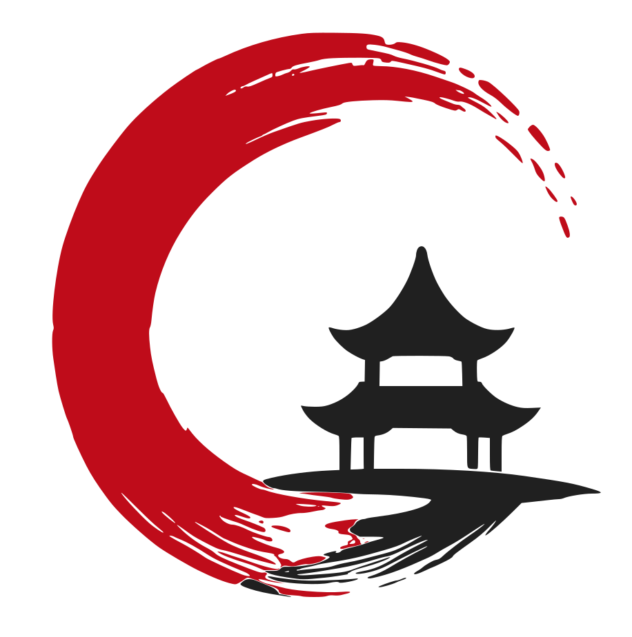

Sembol kilitli · wordmark henüz yok
Yazı karakteri, sembolle birlikte.
Aynı onaylı sembolle üç ayrı tipografi ve lockup denemesi. Her seçenekte Türkçe marka adı ve farklı okuma ritmi; sembolün kendisine dokunulmadı.
Üç ayrı tipografik karakter
Renk ve sembol aynı · yazı karakteri ve yerleşim farklı
ÇinEğitim
Sessiz Kütüphane
Akademik ağırlık; editoryal sakinlik.
Tipografiyi incele →Çin Eğitim
Açık Rehber
İlk bakışta anlaşılır; dijitalde doğrudan.
Tipografiyi incele →ÇİNEĞİTİM
Program İndeksi
Sıkı, modüler ve kurumsal bir bilgi imzası.
Tipografiyi incele →